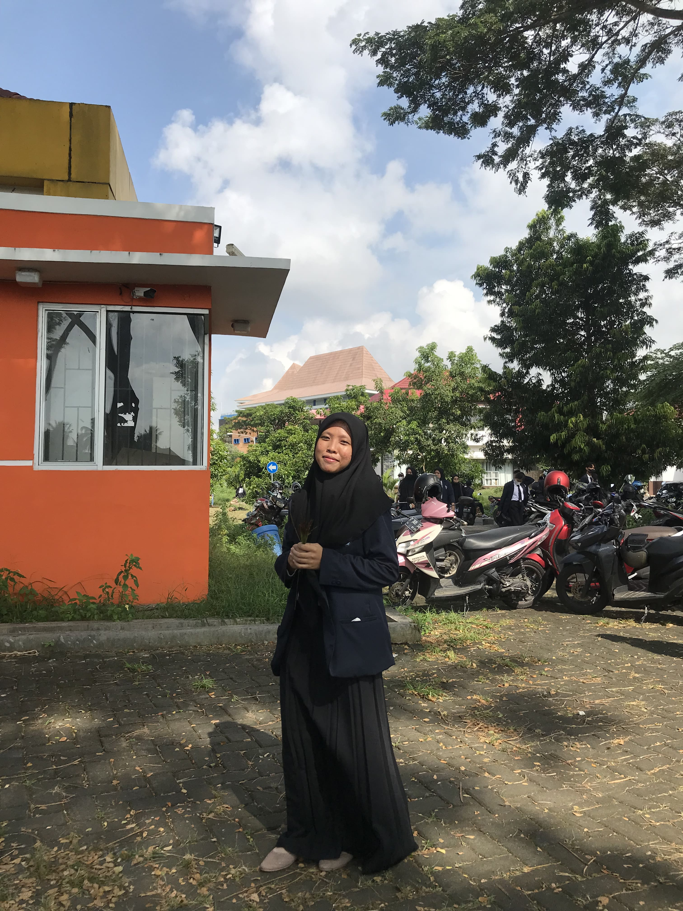

Tiana Oktaviana

About Me
Seorang mahasiswa yang sedang menempuh studi di Politeknik Negeri Banyuwangi program studi D4 - Teknologi Rekayasa Perangkat Lunak. Saya berdomisili di kota kelahiran saya yaitu Banyuwangi. Semangat untuk mengikuti studi independent
semuanyaaaa
Keahlian
- Microsoft Office
- Editing
Riwayat Pendidikan
- SD Negeri 2 Kedungringin (2008-2014)
- SMP Negeri 1 Muncar (2014-2017)
- SMA Negeri 2 Taruna Bhayangkara Jatim (2017-2020)
- Politeknik Negeri Banyuwangi (2020-sekarang)
Kontak Saya
Instagram
WhatsApp